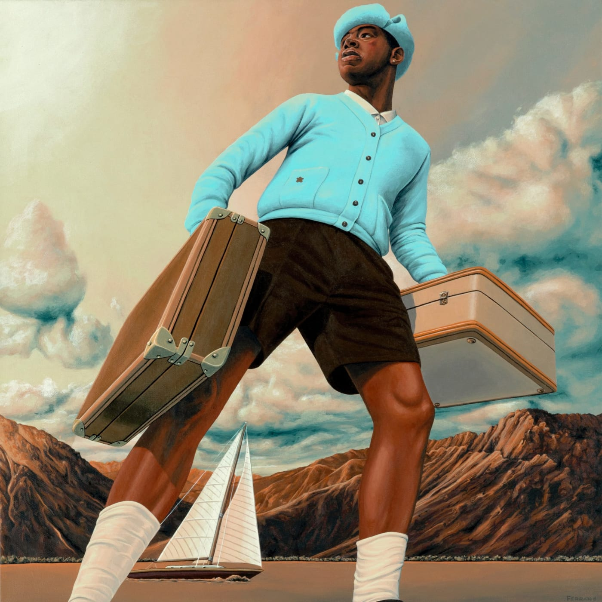

<!DOCTYPE html> 
<html lang="en"></html>
<head>
    <meta name="description" content="Tyler The Creator
    Fan Page by Chris Sullivan">
    <meta name="keywords" content="Tyler, rap, music">
    <title>
        Tyler the Creator Website
    </title>

    <style>
        #pinklarge{
            color: lightpink;
            font-size:larger
        }
        #pink{
            color: lightpink
        }
        #green{
            color:lightgreen;
            font-size:medium
        }
        #blue{color:aqua}
        #orange{
            color:lightsalmon
        }
    </style>
</head>

<body style= "text-align:center">
<div id="about Tyler"></div>
<h1 id="blue">Tyler's World</h1>
<p id="pinklarge">Welcome to Tyler's World</p>
<p id="green"> A Fan Page for an Amazing Rap Artist</p>

<hr>

<p id="pink"><b>Tyler the Creator</b>, real name Tyler Gregory Okonma, is an 
    American rapper, singer, and record producer. He is one of
    the founding members of the music collective 
    <a href="https://en.wikipedia.org/wiki/Odd_Future">Odd Future</a>
    He has also won two Grammy awards.
</p>

<p id="green">
    This website will provide information regarding his 
    rap albums. Let's dive right in and look at what he's got.
</p>

<hr>

<h2 id="pink">
    Goblin
</h2>

<p>
    
    <ol>
        <li>
            Goblin
        </li>
        <li>Yonkers
        </li>
        <li>Radicals</li>
        <li>
            She(Ft. Frank Ocean)
        </li>
        <li>
            Transylvania
        </li>
        <li>
            Nightmare
        </li>
        <li>
            Tron Cat
        </li>
        <li>
            Her
        </li>
        <li>
            Sandwiches(Ft. Hodgy)
        </li>
        <li>
            Analog(Ft.Hodgy)
        </li>
    </ol>
    
</p>

<hr>

<p>
    <h2 id="orange">
Flower Boy
    </h2>
    
<ol>
    <li>
        Foreword(Ft. Rex Orange County)
    </li>
    <li>
        Where This Flower Blooms(Ft. Frank Ocean)
    </li>
    <li>
        Sometimes...
    </li>
    <li>
        See You Again(Ft. Kali Uchis)
    </li>
    <li>
        Who Dat Boy(Ft. A$AP Rocky)
    </li>
    <li>
        Pothole(Ft. Jaden)
    </li>
    <li>
        Boredom(Ft. Anna of the North & Rex Orange County)
    </li>
    <li>
        911/Mr.Lonely(Ft. Frank Oceann & Steve Lacy)
    </li>
    <li>
        November
    </li>
    <li>
        Glitter
    </li>
</ol>

</p>

<hr>

<p>
    <h2 id="blue">CMIYGL</h2>
    

    <ol>
        <li>
            SIR BAUDELAIRE(Ft. DJ Drama)
        </li>
        <li>
            CORSO
        </li>
        <li>
            LEMONHEAD(Ft. 42 Dugg)
        </li>
        <li>
            WUSYANAME(Ft. Ty Dollar $ign)
        </li>
        <li>
            LUMBERJACK
        </li>
        <li>
            HOT WIND BLOWS(Ft. Lil Wayne)
        </li>
        <li>
            SWEET/I THOUGHT YOU WANTED TO DANCE
        </li>
        <li>
            RISE!(Ft. Daisy World)
        </li>
        <li>
            JUGGERNAUT(Ft. Lil Uzi Vert & Pharrell Williams)
        </li>
        <li>
            WILSHIRE
        </li>
    </ol>
</p>

<hr>

<h2 id="pink">Best Interest</h2>
<p id="green">
    <b>Tyler the Creator</b> also released a single by the name of
    Best Interest. Here are the lyrics

    <div id='rg_embed_link_5122612' class='rg_embed_link' data-song-id='5122612'>Read <a href='https://genius.com/Tyler-the-creator-best-interest-lyrics'>“BEST INTEREST” by Tyler, The Creator</a> on Genius</div> <script crossorigin src='//genius.com/songs/5122612/embed.js'></script>

Here is a video of him being funny as well!

    <iframe width="560" height="315" src="https://www.youtube.com/embed/8GKPbHsNqOo" title="YouTube video player" frameborder="0" allow="accelerometer; autoplay; clipboard-write; encrypted-media; gyroscope; picture-in-picture; web-share" allowfullscreen></iframe>

</p>

<hr>

<h2>EARFQUAKE</h2>
<p id="orange">
    I also wanted to share a few lyrics from my favorite song,
    <em>EARFQUAKE</em><br>
    <br>
    Don't leave, it's my fault (yeah) <br>
    'Cause when it all comes crashing down I'll need you

    
</p>

<input type="button" value="Tyler Rocks!">

<footer>
    <p id="green">
        Proudly presented by Chris Sullivan
    </p>
</footer>

</body>
</html>
